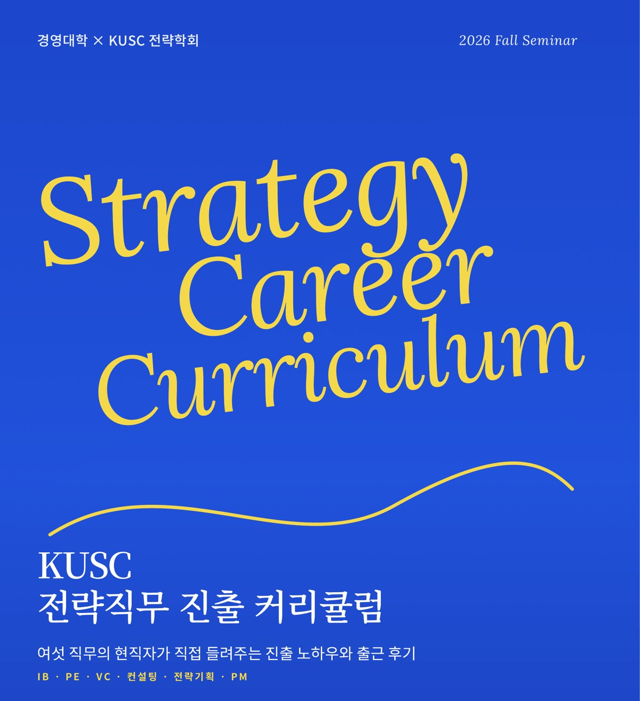

Konkuk Univ Strategy Consulting
건국대학교 전략경영학회 KUSC
전략적·구조적 사고를 훈련하는 건국대학교 전략경영학회
- 40명26-2학기 활동 인원
- 39명26-1학기 수료생
- 9회26-2학기 정기 세션
- 2026설립
Highlights
대표 활동
About
학회 소개
전략경영학회 KUSC는 기획 직무, 전략 마케팅 및 컨설팅에 관심 있는 학생들을 위한 학회로, 전략적·구조적 사고를 훈련합니다. 케이스 스터디를 중심으로 문제 해결 역량을 기르며, 지도교수님의 피드백을 통해 논리적 사고를 강화합니다.
학기 말에는 공모전을 통해 성장을 직접 확인하고, 선배 초청 강연을 통해 실무자의 취업 전략을 듣습니다. 활동자에게는 학장 명의 수료증이 수여되며, 산학연계 프로젝트를 통해 실전 경험도 쌓을 수 있습니다.
설립 목적
전략경영 케이스 스터디, 실무진 및 전문가 연계 프로젝트 등 커리큘럼을 운영하고, 학회원의 책임감 있는 참여와 역량 강화를 도모합니다.
비전
IB, PE, VC, 전략경영컨설팅, 사업기획, PM의 6개 엘리트 전략 직무를 아우르는 전략학회. 소수정예로 운영하며, 진출한 선배가 후배를 이끄는 선순환 구조를 지향합니다.
이런 사람과 함께해요
기획 직무, 전략 마케팅, 컨설팅에 관심 있는 학생 (학과 무관)
활동 혜택
학장 명의 수료증
우수 공모전 활동 부원 대상 장학금
학회 구성
26-2학기 활동 인원
40명
학회원 32명 + 임원진 8명
26-1학기 수료생
39명
학회원 34명 + 임원진 5명
현재 기수
26-2학기
2026년 설립
Activities
활동 소개
매주 수요일 정기 세션으로 진행합니다. 항목을 누르면 상세 내용이 펼쳐져요.
커리큘럼
OT에서 학기 커리큘럼·운영 방식·수료 기준을 안내하고, 매주 수요일 정기 세션으로 진행합니다.
매 학기 첫 세션 OT 학회 소개와 한 학기 커리큘럼·운영 방식·수료 기준 안내
- 학회 소개 및 한 학기 전체 커리큘럼·운영 방식 설명
- 학회칙 및 수료 기준 안내
케이스 스터디
팀별로 실제 기업의 문제를 정의하고 가설을 세워 검증한 뒤 전략 대안을 발표하는 세션입니다. 매 발표마다 지도교수님의 피드백을 받아 논리를 다듬습니다.
- 2026-2학기
- 산학협력 프로젝트의 준비 단계로 운영했습니다. 실제 기업 과제에 들어가기 전, 관심 산업을 기준으로 팀을 새로 꾸려 기업 분석 역량을 점검했습니다.
- 2026-1학기
- 방법론을 배우고 직접 적용해 보는 데 초점을 맞췄습니다. 강연으로 분석 틀을 익힌 뒤 팀별 발표로 직접 적용해 보았습니다.
2026-2 · 11/18완료 산업군별 기업 분석 발표 금융·AI·엔터·소비재·유통 6개 팀이 산업 내 기업을 하나씩 분석
- 학회원 선호 산업군으로 금융·AI·엔터·소비재·유통(2개 팀)의 6개 팀 구성
- 문제 정의부터 가설 검증, 전략 대안, 단계별 실행 로드맵까지 한 번에 발표
- 발표마다 지정된 두 팀이 질문하는 팀 간 상호 Q&A
- 지도교수님의 팀별 피드백과 전체 총평
2026-1 · 5/6완료 방법론 적용 팀별 발표 강연에서 배운 가설 중심 분석 틀을 팀별 케이스에 직접 적용
- 3/25 강연에서 배운 가설 중심 분석 틀을 팀별 케이스에 적용해 발표
- 발표 내용을 두고 팀별 토론
- 지도교수님 피드백
2026-1 · 3/25완료 케이스 스터디 강연 — Case Study 분석의 로직과 툴 가설 중심으로 문제를 풀고 의사결정권자를 설득하는 케이스 스터디 방법론
- 케이스 스터디는 정답 찾기가 아니라 의사결정권자를 논리적으로 설득하는 과정 — 현상과 원인 구분, 가설 지향적 사고
- 문제 정의 → 이슈 트리(MECE) → 가설 설정 → 가설 검증 → 전략 대안 → 우선순위의 6단계 문제해결 프로세스
- PEST, 5 Forces, VRIO, Value Chain, SWOT·TOWS, 우선순위 매트릭스 등 분석 도구를 언제·왜 쓰는지 학습
산학협력 프로젝트
기업이 낸 실제 과제에 팀별로 전략을 제안하고, 기업 실무진 앞에서 발표해 평가와 피드백을 받습니다.
- KG제로인
- 유가네닭갈비
- 국내 AI 기업
2026-2 · 12/9진행 중 산학협력 프로젝트 — 유가네닭갈비 유가네닭갈비 산학협력 프로젝트 최종 발표 (기업 실무진 참석)
- 과제: 대학생 협찬의 매장 방문 전환 및 재방문 확대 전략
- 대학생 소비자 조사를 바탕으로 대학생이 유가네닭갈비를 어떻게 보는지, 협찬 후 매장을 방문하거나 방문하지 않는 이유를 분석
- 정규 세션 외 추가 프로젝트로, 희망자가 자율적으로 팀을 구성해 참여
- 기간: 2026.11.12 ~ 12.9 · 최종 발표 12/9(수) 19:00
2026-2 · 12/2예정 산학협력 프로젝트 — 국내 AI 기업 국내 AI 기업 산학협력 프로젝트 최종 발표
주제 2개 중 팀별 선택
- ① AI 엔터테인먼트 서비스 글로벌 확장 우선순위
- ② 콘텐츠 및 플랫폼 기업의 잠재적 규제 헷징 전략
2026-1 · 5/13완료 산학협력 프로젝트 — KG제로인 개인 투자자 대상 펀드 추천 서비스 고도화 전략 발표
- 미션: 개인 투자자 대상 펀드 추천 서비스 고도화 전략
- 팀별 자유 양식 발표 (팀당 15분)
- 기업 현직자가 심사위원으로 참석해 실무 관점에서 평가·피드백
강연 세미나 · 행사
현직 컨설턴트 선배가 이어서 진행하는 교육세션(4회)과 선배 초빙강연을 듣고, 경영대학과 함께 전교생 대상 공개 세미나를 엽니다.
2026-2 · 11/11완료 컨설턴트 현직자 교육세션 4 — 전략 직무 진입 실행하기 서류부터 인터뷰까지, 전략 직무 지원 준비
- 컨설팅 레쥬메 작성 규칙과 영문·국문 레쥬메 작성법
- 자기소개서 작성법
- 서류에서 인터뷰로 이어지는 구조
2026-2 · 10/28완료 교육세션 3 — 전략직무 진출 커리큘럼 (공개 세미나) 여섯 직무의 현직자가 직접 들려주는 진출 노하우와 출근 후기
- 경영대학 × KUSC 전략학회 2026 Fall Seminar. 학과와 관계없이 관심 있는 학생 누구나 사전 신청해 참여
- IB·PE·VC·컨설팅·전략기획·PM 현직자 초청, 실제 업무·고충·생활 방식과 취업 준비 노하우 공유
- 사전 수집 질문 중심 질의응답
- 일시·장소: 10/28(수) 19:00, 경영대학 101호

2026-2 · 10/7완료 교육세션 2 — 전략 직무 구조화하기 가상 스타트업의 7년으로 보는 직무별 역할과 업무
- 가상의 디저트 브랜드가 창업·투자·앱 출시·해외 진출·매각에 이르는 7년을 따라가며, 단계마다 어떤 직무가 왜 필요한지와 주니어가 실제로 하는 일을 체험
- 성향·관심 직무별 조 편성 그룹워크
2026-2 · 9/30완료 외부 현직자 초빙 강연 최근 이직한 동문 선배가 전하는 현실적인 취업 준비와 현직 이야기
- 연사: 건국대학교 경제학과 동문 선배 (경영전략·관리 직무 현직자)
- 졸업한 지 얼마 되지 않은 선배의 현실적인 취업 준비 팁과 생생한 현직 이야기
- 사전 수집 질문 중심 질의응답
2026-2 · 9/16완료 교육세션 1 — 전략 직무 정의하기 IB·PE·VC·컨설팅·사업기획·PM, 6개 전략 직무 해부
- 6개 전략 직무의 실제 차이와 요구 역량, 국내외 대표 기업 소개
- 진단지로 내 성향에 맞는 직무 유형을 확인하고 보완할 점 안내
2026-1 · 4/8완료 선배 강연 컨설턴트 선배의 실무 경험과 커리어
- 컨설턴트 선배의 실무 경험 및 커리어 강연
- 공모전 공지
Q&A
자주 묻는 질문
모집 안내
2026-2학기 모집 마감- 다음 모집
- 2027-1학기, 2027년 3월 예정
- 모집 대상
- 한 학기 동안 수요일 정기 세션에 참석 가능한 학생 (학과 무관)
- 지원 방법
- 모집 기간에 공지되는 구글폼으로 지원 (공지: 경영대학 공식 SNS, 건국대학교 커뮤니티, KUSC 인스타그램)
- 선발 절차
- 지원서 접수 후 학회원 선발
- 학회비
- 15,000원 (2026-2학기 기준, 이후 변동 가능)
경영학과가 아니어도 지원할 수 있나요?
네, 학과와 관계없이 한 학기 동안 정기 세션에 참석할 수 있으면 지원할 수 있습니다.
다음 모집은 언제인가요?
2027년 3월(2027-1학기)에 모집할 예정입니다. 일정은 인스타그램과 네이버 카페로 안내합니다.
활동 기간과 세션 일정은 어떻게 되나요?
정기 세션은 수요일에 진행됩니다. 2026-2학기는 9/9 OT부터 12/9 산학협력 최종 발표까지 9회, 2026-1학기는 3/11 OT로 시작했습니다.
학회 활동은 어느 정도 시간이 드나요?
수요일 19시에 시작하며 1시간 30분~2시간 정도 소요됩니다.
활동비(회비)가 있나요?
2026-2학기 기준 학회비는 15,000원이며, 학기에 따라 달라질 수 있습니다. 입금 후 중도 탈퇴 시에는 환불되지 않습니다.
출석 규정이 있나요?
사전 고지 없는 지각 3회 또는 무단결석 1회, 인정결석 2회 누적 시 퇴출됩니다. 지각·결석 사유는 세션 시작 전에 임원진에게 증빙과 함께 공유해야 합니다.
수료증은 어떻게 받나요?
한 학기 동안 필수 활동을 이수하면 학장 명의 수료증이 발급됩니다. 출석 규정에 따라 퇴출되거나, OT·산학협력 최종 성과 발표 등 필수 세션에 빠지거나 과제를 내지 않으면 발급되지 않습니다. (2026년 기준)
산학협력 프로젝트는 어떤 기업과 하나요?
2026년에는 KG제로인, 국내 AI 기업, 유가네닭갈비와 함께했습니다. 기업이 낸 실제 과제에 팀별로 전략을 제안하고 기업 실무진에게 평가받습니다.
문의는 어디로 하나요?
인스타그램 DM 또는 네이버 카페로 문의해 주세요.